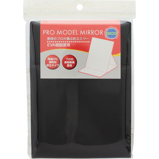
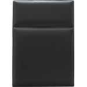

返回列表
产品名称：ナピュア プロモデル折立ミラー・エコ Ｍ

堀内鏡工業 ナピュア プロモデル折立ミラー・エコ Ｍ ＨＰ２２Ｍ
メーカー 堀内鏡工業
JANコード 4510510240729
商品の特徴
美容のプロが選ぶ折立ミラーです。
EVA樹脂使用で、持ち運びに便利な折立タイプです。
プロの美容部員愛用しています。
この商品は自然・環境・人にやさしい素材を使用しています。
成分・分量
用法及び用量